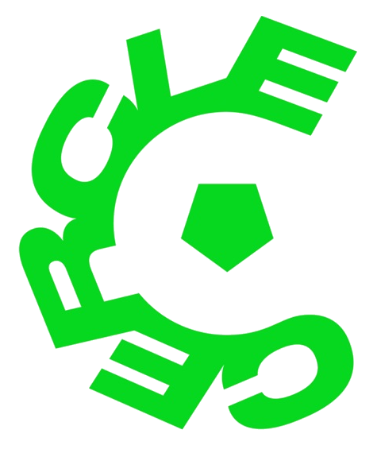
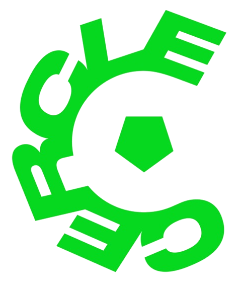
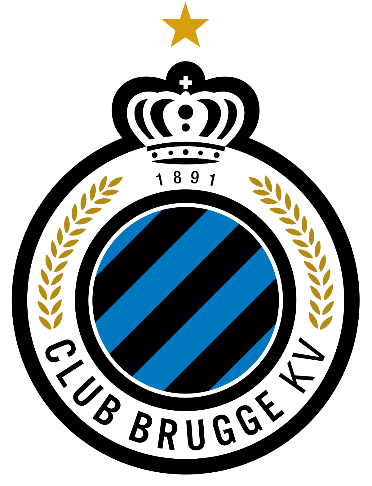
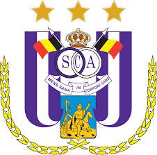

Cercle wint!
Dit weekend heeft Cercle tegen AA Gent gewonnen met 4-3
Dit weekend heeft Cercle tegen AA Gent gewonnen met 4-3
Wanneer ze deze week voor de derde keer op rij winnen is dit voetbalgeschiedenis in België
Met 13 punten op 30 komen ze in de buurt van de degradatiezone! Nieuwe trainer?
